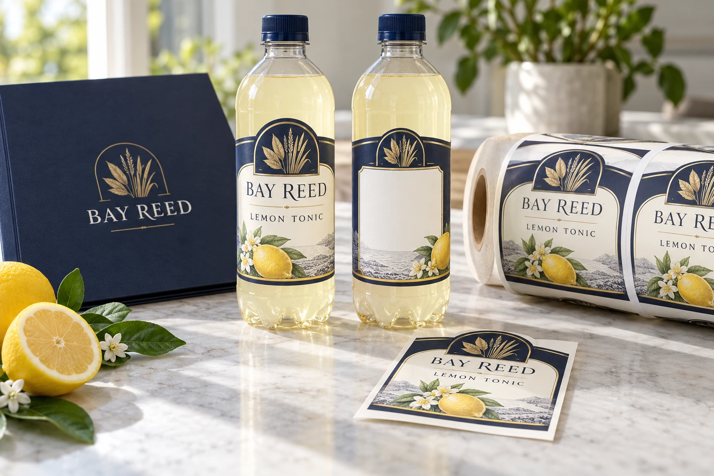

The adhesive name in a supplier email matches a recognized product. The finished order also includes a different printed face, ink, varnish or coverage. The buyer needs to know which combination the available evidence actually represents.
Compare the tested or recognized printed construction with the complete proposed label, then refer differences for review. This avoids treating one matching component code as proof of the entire bottle's recycling outcome.

AI-generated packaging planning example. Bay Reed is a fictional brand; not a customer project, production test or usable retail artwork.
Request the scope, not just a logo
Ask for the applicable report, recognition or guidance reference and its date/version. Identify the submitted construction and the limitations stated by its issuer. A cropped badge or a sales slide cannot show all of that scope.
| Comparison item | Evidence construction | Proposed order |
|---|---|---|
| Face and treatment | Identified material/system | Exact supplied proposal |
| Adhesive | Product reference and stated use | Proposed reference and application |
| Print/finish | Ink, varnish or other represented decoration | Actual offered print and protective layers |
| Package/coverage | Bottle and configuration represented | Intended bottle, label size and coverage |
| Conditions/limits | Issuer's stated boundaries | Matching, different or unknown |
| Review | Responsible technical contact | Documented conclusion or open gap |
Do not fill an unknown cell by assuming equivalence. Ask the supplier or relevant assessor whether additional evidence or a different construction is needed. This worksheet does not replace the applicable recycling design or testing process.
Use historical recognition accurately
UPM's October2021 printed-PP recognition announcement identifies a particular printed label/adhesive/ink-and-varnish combination. It is an example of construction-specific evidence, not a current approval of every label using a similar polymer or adhesive.
Keep the historical date visible when using an older reference. Obtain current applicable documentation for the actual offer rather than calling the old announcement a fresh validation of your design.
Keep three outcomes separate
Use-phase adhesion and appearance answer whether the bottle label performs before disposal. Recycling-process compatibility concerns the defined material stream and assessment. Actual collection and processing depend on the market and available system. A positive result in one area should not be restated as success in all three.
If the design changes a metalized layer, coating, bottle color or coverage, identify the change before reusing the prior conclusion. The responsible reviewer decides its significance; the buyer should not infer a new result from the artwork preview.
For returnable-glass washing, use the separate reuse brief. For wet-use label evidence, use sample coverage. For protective finish scope, identify the actual top layer before the recycling review.
Short answer
A wash-off label is designed to hold during the product's use phase and release under defined recycling wash conditions. The goal is to let the label and adhesive separate from PET flakes so cleaner bottle material can continue through the recycling process.
The phrase sounds simple. The buying decision is not. A label face, adhesive, ink, coating, bottle color and coverage area all enter the package assessment. Local infrastructure matters too. A supplier cannot turn a global sustainability promise into fact with one material name.
What wash-off technology is trying to solve
During use, a beverage label has to survive filling, condensation, transport and the customer's hand. During recycling, that same bond may need to release in a controlled wash so the label material can separate from PET. Good performance therefore looks contradictory: stay on now, come off later.
| Stage | Required behavior | Buyer evidence |
|---|---|---|
| Filling and distribution | Secure bond and legible print | Package trials under real handling |
| Consumer use | Resistance to water, scuffing and temperature | Finished bottle testing |
| Recycling wash | Controlled label and adhesive separation | Recognized test or guidance documentation |
| Material sorting | Separated label behaves as intended in the stream | Full construction and density information |
A typical launch brief: "make it sustainable"
Consider a composite inquiry. A beverage team asks for a clear label on a clear PET bottle and wants a recycling symbol added. The intention is good. The brief does not state label coverage, adhesive code, ink coverage or destination market.
In this hypothetical inquiry, the relevant construction and intended market need evidence before a packaging claim is approved.
Five parts of the package to review
- Bottle: PET resin, color and any barrier construction.
- Label face: paper or film type, density and coverage.
- Adhesive: use-phase bond plus release under specified wash conditions.
- Printing and finish: ink, varnish, lamination and metallic decoration.
- Market: collection, sorting and recycling guidance where the package is sold.
Construction-specific supplier evidence should be checked for the exact proposed bottle and label system.
Where a standard label can still be the honest choice
A project without applicable compatibility evidence should keep that conclusion unresolved. Do not describe a general waterproof stock as recycling-compatible merely because it is a practical launch option.
What to request from a label supplier
- Face material and adhesive product codes.
- Intended bottle resin and compatible recycling stream.
- Test method, guidance reference or third-party compatibility evidence.
- Limitations for ink, coverage, lamination and bottle color.
- Use-phase testing for condensation and handling.
- Written language that supports any proposed packaging claim.
For clear bottle artwork, read Clear Labels and White Ink. For moisture performance, use the Waterproof Beverage Label Guide. Confirm final environmental claims with the responsible brand and compliance team for the destination market.
Send the relevant project details
Discuss the proposed PET bottle-label construction with bottle specification, label size, full print/finish proposal, quantity and intended market. State the evidence reference and unmatched fields. The form opens an email draft; use listed email or WhatsApp for files. Current compatibility assessment and any claim need confirmation by the responsible supplier and reviewer.